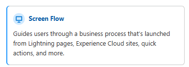
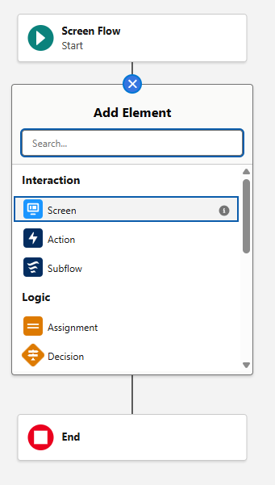
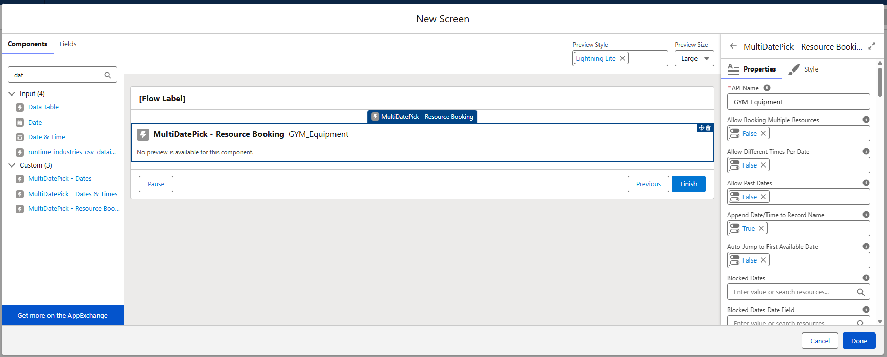

Screen Flow Guide
Put a MultiDatePick calendar in any Salesforce Screen Flow. Drop the component on a screen, set Config Name, and you are done.
No Apex requiredOne property: Config Name
Build the config once in the Setup Wizard, or import one from the Config Library. In the flow you set one property and the component loads the rest.

- Open a Screen
- Search MultiDatePick
- Drag on Booking, Date or Date Time
- Config Name
- Save
Every checkbox comes from the config. With Config Name set you never touch a checkbox in Flow Builder. Text and number properties you fill in on the screen override the config.
Save against a record
Bind Parent Record Id to the record the flow runs for, such as {!recordId} or a Get Records result. The component then saves its records linked to that parent. On Date and Date Time, leave it blank and the selection passes to the flow instead.
Build it from a blank flow
Five minutes in Flow Builder. Nothing to deploy: you test it with Debug.
Setup, Flows, New Flow, Screen Flow, Create.

Add a Screen element to the canvas.

Search MultiDatePick in the component list and drag it on.

Type the config name exactly as the wizard saved it. Bind Parent Record Id if the records belong to a parent.
Click Debug, pick dates or time slots, and check the records were created. Then Activate and add the flow to a record page, an action button or an Experience Cloud site.
What the flow gets back
Booking saves its own bookings. Date and Date Time hand the selection to the flow, or save it themselves when Parent Record Id is set.
| Component | Output (label in Flow Builder) | API name |
|---|---|---|
| Booking | Successful Bookings Count, Conflict Dates | bookingSuccessCount, bookingConflictDates |
| Date | Selected Dates, Date Ranges JSON | selectedDates, selectedDateRangesJson |
| Date Time | Dates With Times JSON | selectedDatesWithTimesJson |

No Apex required: the ready-made Flow actions
You never write Apex. To turn Date or Date Time JSON into records, use the three pieces that ship with the package. They appear in Flow Builder like any standard action.
- Parse Date Entries from JSON
- Loop its entries
- Create Records, one per entry
Search for it under Action. Feed it Date Ranges JSON or Dates With Times JSON. Date only or date and time is detected for you.
Class: MultiDatePickParser
What the action returns. Store it in an Apex-Defined variable and loop data.
data: the entries to looptotalCount: how manysuccess,errorMessage: for a Decision
One entry, your loop variable. Map it in Create Records.
fromDate,toDate: the range (equal for one day)startTime,endTime: Date Time onlyid: entry number
Date Ranges JSON (Date)
{ "data": [
{ "id": 1, "fromDate": "2026-02-10", "toDate": "2026-02-12" },
{ "id": 2, "fromDate": "2026-02-15", "toDate": "2026-02-15" }
] }Dates With Times JSON (Date Time)
{ "data": [
{ "id": 1, "fromDate": "2026-02-10", "toDate": "2026-02-10",
"startTime": "09:00", "endTime": "17:00" }
] }Appendix: map properties by hand
Only if you skip Config Name. Flow Builder lists properties alphabetically and shows picklists such as Conflict Behavior as plain text boxes, which is why Config Name is the easier path. For a Booking screen, set these:
| Label in Flow Builder | What to enter | API name |
|---|---|---|
| Resource Object API Name | The object you book, such as a Room object | resourceObjectApiName |
| Resource Name Field | The field shown as each resource's name | resourceNameField |
| Capacity Field | How many bookings a resource takes at once. Slots show 3/5 and close when full. | capacityField |
| Booking Object API Name | The object each booking is saved to | resourceBookingObject |
| Booking Date Field | The date field on the booking object | bookingDateField |
| Booking Start Time Field, Booking End Time Field | The time fields on the booking object | bookingStartTimeField, bookingEndTimeField |
| Booking Resource Field | The lookup from the booking to the resource | bookingResourceField |
| Conflict Behavior | Type block (default), skip or allow | conflictBehavior |
| Parent Record Id | The record the bookings belong to, such as {!recordId} | recordId |
| Parent Record Relationship Field | The lookup from the booking to that parent | relationshipFieldApiName |
Checkboxes are yours to set here. Without Config Name, every checkbox (Required, Show Inline, Output Date Ranges as JSON and the rest) is whatever you tick on the screen.
See it before you build it
Try the live demo with no login, or get notified the day MultiDatePick arrives on the Salesforce AppExchange.
Stuck on a flow? Support@MultiDatePick.com